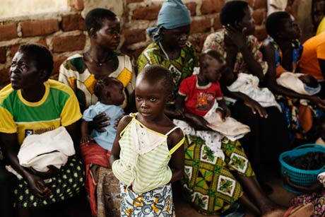
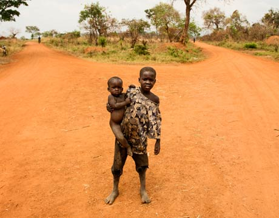
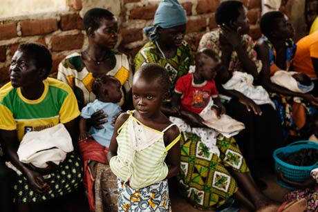
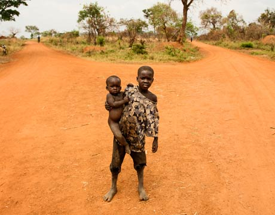

ActionAid
Power in People
ActionAid Ireland is a development organisation, established in 1983, to support people living in poverty and their fight for a better life. As part of ActionAid International, we are one of the world's most respected development organisations, working with over 19 million people in more than 45 countries in Africa, Asia and Latin America.
ActionAid works in 3,000 of the poorest rural communities around the world, supporting people living in poverty to organise and engage in local democracy. We commit to long-term development projects and always work at grassroots levels to ensure that we are supporting communities to strengthen their own efforts to throw off poverty.
ActionAid focuses on the people that others forget. People in poverty. People who face discrimination. People whose voices are ignored.
Through important programmes such as Village Sponsorship and through our campaigning work in Ireland we actively support people fighting for their rights. Simple things like the right to eat, the right to stay on their land, the right to an education and the right to have a say in the decisions that shape their lives.
By becoming a sponsor you too are joining the active community of Irish people promoting the rights of the most vulnerable.
Learn More at: www.actionaid.ie or become a sponsor now:
Why Become A Village Sponsor?
- In Northern Uganda 65% of girls leave primary school early and only 45% of women and girls over the age of 10yrs can read. Your support can ensure that young girls have a right to the quality education they deserve
- 70% of the population lives in abject poverty. Having no or only one meal a day is not unusual. With your support we can continue developing our micro credit and savings schemes to promote entrepreneurship and secure sustainable livelihoods for vunerable members of the community including women and young people.
- In Amuru there is one doctor per 50,650 members of the community. By becoming a village sponsor you are supporting better healthcare facilities and staffing levels in rural clinics
- ActionAid are supporting community groups and organisations to represent women, young people and small holder farmers ensuring that they are actively involved in developing local policies for employment and agriculture
- It is well known that corruption is rife in Uganda. This means that Ugandan public funds are not reaching the areas for which they are promised. With your support, ActionAid is training community groups to have skills to oversee and monitor public spending making sure that government is accountable for development of public services
Join us as a Village Sponsor and become a part of a powerful global movement of 400,000 sponsors who are bringing about positive changes in the lives of people living in poverty. Your support is urgently needed to secure basic amenities in the community that we sometimes take for granted like healthcare, food, water and education.
Becoming a Village Sponsor is easy. Click on the button below to register online. Call us on +353 (1) 878 7911 or e-mail deirdre.treacy@actionaid.org in the ActionAid Office in Dublin.
Amuru, Uganda
For nearly two decades, Northern Uganda was ravaged by war and conflict leaving the community in a situation of extreme poverty, exclusion and deprivation. During this time, many families were displaced into refugee camps where they suffered from extreme poverty, illiteracy, malnutrition and diseases. When the war officially ended in 2008, the community were left to try and re-build their lives after spending close to 2 decades in the camps.
It has been a daily uphill struggle and even now an estimated 68% of the communities in Amuru live in abject poverty and urgently need help.
Most rural households have only one meal a day and hunger is among the critical factors that affect school attendance and learning. 38% of children aged 6-12 do not get enrolled in school.
A woman has an average of 7 children and it is normal that she will also care for children that have been orphaned as a result of the war. These families struggle to survive on an average household income of less than 2 euro a day. The situation is bleak but they are determined to turn things around for themselves.

People from Oticihi Village came together to build a bridge in 2011 to ensure children can safely go to school in the rainy season
PHOTO CREDIT: Jakob Dall (2013)
About the Village Sponsorship Programme
By becoming a village sponsor with ActionAid, you join a powerful movement of people who are bringing about positive change in the lives of communities in developing countries.
Sponsoring a village in Uganda is more than just giving. Your support will transform lives by creating solid surroundings in which the community can thrive. To create this environment we work with local colleagues and partners in Uganda and commit ourselves long term to the community to develop their schools, livelihoods and health care.
Women in rural Uganda endure a lifetime of hardship. They have an average of seven children to support including orphans as a result of the war.
ActionAid is working in Amuru, Uganda to secure livelihoods for women through, training, micro finance & savings groups
PHOTO CREDIT: Jakob Dall (2013)
How does it work?
As a part of our village sponsorship programme you will receive two wonderful reports every year from Amuru in Uganda which will highlight their achievements and progress as a result of your support as well as a message from a member of the village when you first join the programme.
We also encourage you to keep up to date by logging back in to this website from time to time as we update personal accounts of what life is like in Amuru and the challenges that the community face. As a part of the programme you will also receive bi-annual reports direct from the field where you will learn about their achievements as a result of your support.
10 Reasons They Need Your Help
- An estimated 68% of the total population live in abject poverty
- A 2013 report by ActionAid International Uganda put youth unemployment at 62 %
- In Amuru there is one doctor per 50,650 members of the community
- 98% of farmers still use hand tools to cultivate and clear land
- No woman in Amuru owns land and widows are often driven from their home when their husband dies as they have no ownership rights
- 25% of children enrolled in primary schools are orphans
- 65% of girls and 45% of boys are forced to leave school in 7th grade
- Classroom ratio is 1:104 as compared to the national average of 1:57
- Just 45% of women and girls over 10 years in Amuru can read
- Women in Amuru have an average of eight children to support including orphans as a result of the war
- 80% of girls under the age of 18 are forced into marriages, mainly as a result of becoming pregnant often through rape

Why Become A Village Sponsor?
- In Northern Uganda 65% of girls leave primary school early and only 45% of women and girls over the age of 10yrs can read. Your support can ensure that young girls have a right to the quality education they deserve
- 70% of the population lives in abject poverty. Having no or only one meal a day is not unusual. With your support we can continue developing our micro credit and savings schemes to promote entrepreneurship and secure sustainable livelihoods for vunerable members of the community including women and young people.
- In Amuru there is one doctor per 50,650 members of the community. By becoming a village sponsor you are supporting better healthcare facilities and staffing levels in rural clinics
- ActionAid are supporting community groups and organisations to represent women, young people and small holder farmers ensuring that they are actively involved in developing local policies for employment and agriculture
- It is well known that corruption is rife in Uganda. This means that Ugandan public funds are not reaching the areas for which they are promised. With your support, ActionAid is training community groups to have skills to oversee and monitor public spending making sure that government is accountable for development of public services
Join us as a Village Sponsor and become a part of a powerful global movement of 400,000 sponsors who are bringing about positive changes in the lives of people living in poverty. Your support is urgently needed to secure basic amenities in the community that we sometimes take for granted like healthcare, food, water and education.
Becoming a Village Sponsor is easy. Click on the button below to register online. Call us on +353 (1) 878 7911 or e-mail deirdre.treacy@actionaid.org in the ActionAid Office in Dublin.
Why Become A Village Sponsor?
- In Northern Uganda 65% of girls leave primary school early and only 45% of women and girls over the age of 10yrs can read. Your support can ensure that young girls have a right to the quality education they deserve
- 70% of the population lives in abject poverty. Having no or only one meal a day is not unusual. With your support we can continue developing our micro credit and savings schemes to promote entrepreneurship and secure sustainable livelihoods for vunerable members of the community including women and young people.
- In Amuru there is one doctor per 50,650 members of the community. By becoming a village sponsor you are supporting better healthcare facilities and staffing levels in rural clinics
- ActionAid are supporting community groups and organisations to represent women, young people and small holder farmers ensuring that they are actively involved in developing local policies for employment and agriculture
- It is well known that corruption is rife in Uganda. This means that Ugandan public funds are not reaching the areas for which they are promised. With your support, ActionAid is training community groups to have skills to oversee and monitor public spending making sure that government is accountable for development of public services
Join us as a Village Sponsor and become a part of a powerful global movement of 400,000 sponsors who are bringing about positive changes in the lives of people living in poverty. Your support is urgently needed to secure basic amenities in the community that we sometimes take for granted like healthcare, food, water and education.
Becoming a Village Sponsor is easy. Click on the button below to register online. Call us on +353 (1) 878 7911 or e-mail deirdre.treacy@actionaid.org in the ActionAid Office in Dublin.
Agriculture
Meet Jimmi
Jimmi should have been born into farming – instead he grew up in a displacement camp far away from the land where his family had lived and worked for generations.
For over twenty years, a bloody conflict ravaged Northern Uganda forcing a whole generation of young people into refugee camps. According to the UN's refugee agency, the UNHCR, more than 1.8 million internally displaced) were moved into 251 camps and "protected villages" during Uganda's so-called forgotten war.
Camp life was difficult for Jimmi - living in a makeshift hut in a suffocating and overcrowded camp the months slowly passed into years. There was little or no education available and no training was provided on how to prepare for life once the war ended.
In 2008 Jimmi finally moved back to his rural village in Amuru. After living most of his life in a camp he has no experience of farming and now as a young head of family he has no knowledge or skills to grow food to support his wife Beatrice and their 1.5yr old baby.
His wife Beatrice says; "We do not have anything in the house. Not even pots or plates and cooking is very difficult"
Did you know?
- A 2013 report by ActionAid International Uganda put youth unemployment at 62 per cent.
- 98% of farmers still use hand tools to cultivate and clear land
- Small holder farmers in Uganda are almost 100% organic
Did you know?
Smallholder farmers are very effective and are almost fully organic, but they often lack an understanding of trading and business.
Life is Good When We Have Enough Food
Concy Akwero (38) has spent her day harvesting rice. As she painstakingly thrashes each sheath of rice by hand you are brought back to centuries-old farming methods. It's backbreaking and time consuming but this is how women here in Northern Uganda farm.
"The harvest is not good this year," she says, "There is nothing, last year I harvested five sacks, this year I have no more than three small buckets."
Compared to a harvest of 500kg last year, this year she has no more that 50 kg of rice to feed her family. The drought this year is causing devastation among the farming community in this otherwise fertile corner of Africa. It's the same story with Concy's bean crop – the yield is simply pitiful.
Besides rice and beans, Concy also grows sweet potatoes, peanuts and millet. The rainy season has just set in and small farmers are praying that the rain continues so their next harvest might be better before the dry season comes again. Concy's husband Patrick trades their surplus grain and otherproduce in the local market in the village. This year most of their harvest will be needed by the family and as rice is four times more expensive outside of harvest season they nearly always feel they are living hand- to-mouth.
Concy has 6 children from a 2yr old to 15yr old including an orphan to take care of. With pride Concy shows us around her kitchen inside the small where her two eldest children sleep. Clothes hang from the ceiling inside the hut. She hopes that she can support her children's education as she herself is illiterate and can't even write her own name.
"It's hard to survive mid-season from June to July. During these months we usually only eat once a day in the evening. When we have enough food, we eat twice a day, "says Concy Akwero. It's starting to rain nicely now so we are hoping that this year's drought was a one-off.
"When I'm well rested, and there is enough food, life is good," she says.

Fact on Agriculture
Only about 10 percent of the land in Amuru is cultivated. During the bloody conflict and war against the LRA (Lord's Resistance Army) in Northern Uganda, most of the local population were displaced into refugee camps. During this time, land which had previously been cultivated fell into disrepair and upon returning to the land, the community were faced with a huge task to cut the overgrown bush.
98% of farmers use hand tools to cultivate and clear land. ActionAid supported farmers returning to their land with oxen to assist with the clearing. Groups shared the care of the animals and took turns to plough the fields in advance of planting.
Micro Credit & Savings Groups
Over the years ActionAid have been working with the people of Amuru, we have found that by focusing our livelihood programme on women it has had a dramatic impact on the wellbeing of children, since they spend a significant proportion of their income on their children's food, health and education.
The savings groups are aimed at increasing overall household income through micro credit and savings schemes through targeting smallholder female farmers in local communities.

Achievements
"We are so happy now that we know we have the power to give our children an education. This matters so much to us and I would like to thank ActionAid and our supporters."
Said Ms Adyero Jenifer (32) pictured above Pajaa Savings Group.
The savings groups aim to increase overall household income through the support of micro credit and savings schemes for female farmers like Concy. To strengthen engagement in this programme, in 2013 ActionAid also offered agriculture training using Savings and Credit Cooperatives principles. 47 leaders from 22 savings groups benefitted from this training in the districts of Amuru and Nwoya in Northern Uganda.
In 2013 we had immense success with our ActionAid Village Savings Groups which had an average female participation of 85%.
ActionAid Ireland, working closely with ActionAid Uganda, has been supporting villages in the District of Amuru in northern Uganda since 2008. Our 10 year development programme in Amuru is addressing the many healthcare, food security and education issues faced by local people living in villages. These achievements are not possible without supporter like you.
Why Become A Village Sponsor?
- In Northern Uganda 65% of girls leave primary school early and only 45% of women and girls over the age of 10yrs can read. Your support can ensure that young girls have a right to the quality education they deserve
- 70% of the population lives in abject poverty. Having no or only one meal a day is not unusual. With your support we can continue developing our micro credit and savings schemes to promote entrepreneurship and secure sustainable livelihoods for vunerable members of the community including women and young people.
- In Amuru there is one doctor per 50,650 members of the community. By becoming a village sponsor you are supporting better healthcare facilities and staffing levels in rural clinics
- ActionAid are supporting community groups and organisations to represent women, young people and small holder farmers ensuring that they are actively involved in developing local policies for employment and agriculture
- It is well known that corruption is rife in Uganda. This means that Ugandan public funds are not reaching the areas for which they are promised. With your support, ActionAid is training community groups to have skills to oversee and monitor public spending making sure that government is accountable for development of public services
Join us as a Village Sponsor and become a part of a powerful global movement of 400,000 sponsors who are bringing about positive changes in the lives of people living in poverty. Your support is urgently needed to secure basic amenities in the community that we sometimes take for granted like healthcare, food, water and education.
Becoming a Village Sponsor is easy. Click on the button below to register online. Call us on +353 (1) 878 7911 or e-mail deirdre.treacy@actionaid.org in the ActionAid Office in Dublin.
Healthcare
Meet Beatrice
The light enters the hut signalling the time for Beatrice Pica to start her day of heavy chores. With a swift movement, she sweeps daughter Jacky on her back covering her with a scarf and leaves to fetch water at the nearby river. Kneeling over a tree trunk she scoops water from a muddy pond, throws her yellow water bottle on her head and walks barefoot back to the hut ready for her next chore.
"I have to work hard every day. The chores are never ending and I labour long hours fetching water, collecting firewood for the campfire, cooking and digging in the field. In the evening, I'm exhausted and I have no strength", says 16-year-old Beatrice. In this short break from work she gives us a small glimpse of her daily struggle to survive and protect her small baby.
Beatrice Pica became pregnant at age 14, and now lives with the father of her daughter Jimi Okello, his mother and his brother's family.
"I gave birth to my child on a dusty floor in a hut. I was so scared"
Did you know?
- 80% of girls under the age of 18 are forced into marriages, mainly as a result of becoming pregnant often through rape
- In Northern Uganda, parents typically throw their daughter out of the house upon becoming pregnant, unwilling to be burdened with another child in the household.
- These girls often do not understand their situation when they become pregnant They are left alone

"There is nothing good about my life"
With daybreak Beatrice starts her long day of chores.
A Need for Adequate Healthcare
Disease is rampant in northern Uganda. Malaria, diarrhoea, cough and fever are the most common reasons why people seek medical attention however serious outbreaks of cholera also occur. These diseases - and deaths - are often linked to poor hygiene and contaminated water.
Children especially often die from preventable diseases that could be cured if everyone had access to clean water and adequate healthcare facilities
Today there are only 24 out of 51 parishes in Amuru who have a health centre. 61% of Amuru's population has to walk more than 1 ½ hours to go for a basic medical check-up. Most clinics do not have a doctor and rely on short-term personnel to run the facility. Patients are often misdiagnosed and given wrong medication, costing them their lives.
Beatrice Collects Water


10 Key Facts about Healthcare in Amuru
- In Amuru, there is one doctor per 50,650 people
- One in every four children die before their fifth birthday
- Only 24 of the 51 districts has a health clinic
- 61% of the population walks more than 1 ½ hour to reach the nearest health centre
- Women give birth to an average of six children. In addition, the delivery will often take place in a hut without medical assistance leaving both mother and child in a high risk situation. In addition to her own, women will often take care of orphan provide a few extra children, such as neighbour-children, nephews or nieces who have lost their parents.
- For every 100,000 births, 650 women die in childbirth.
- Some medication is legally free, but these are often illegally resold by healthcare professionals and do not reach the poorest members of society.
- 70% of the population lives in abject poverty. Only one meal a day or, indeed, no food at all is not unusual.
- All families in Amuru have lost loved ones to the bloody conflict between government forces and the rebel army LRA, which devastated the area for two decades until 2006. An unknown number of children were kidnapped during this time and were forced to become child soldiers and to fight in the civil war. Some of these children returned home but many disappeared. Without anyone to turn to or counselling many suffered post traumatic stress and this anguish along with physical injuries suffered it often inhibits their lives tremendously.
- Reports from Amuru clearly show that the Ugandan government and rulers systematically neglect their responsibility to provide care and facilities to the population in the North.
Sources beyond ActionAid data: United Nations.
 




Children Struggle To Survive
Of the 250,000 people who live in Amuru, northern Uganda, about half of the population are under the age of 15. They do not get enough food especially during periods of extreme drought from April to June where there is very little food and it is not possible to eat every day. Malnutrition means that children especially have little resistance to the many diseases that flourish in the area. One in four children will die before their fifth birthday.
The vaccination program against the six "killer diseases" can ensure that children are immunized
The vaccine helps to protect against:
- Polio
- Tuberculosis
- Meningitis
- Measles
- Typhoid
- Yellow fever
It's the little things like access to quality public education, primary public health care, food and water that shape their lives. More often than not, the inability to access such basic services leads to a lifetime of hardship and poverty.
What achievements did we see in 2013:
- Locally run micro credit and savings groups were set up to strengthen agricultural livelihoods targeting women and young people
- The community are now more resilient and able to withstand external challenges such as issues associated with climate crisis declines in market prices.
- Community groups and organisations representing women, youth and small holder farmers will are actively involved in developing local policies for employment and agriculture
ActionAid Ireland, working closely with ActionAid Uganda, has been supporting villages in the District of Amuru in northern Uganda since 2008. Our 10 year development programme in Amuru is addressing the many healthcare, food security and education issues faced by local people living in villages. These achievements are not possible without supporter like you.
Why Become A Village Sponsor?
- In Northern Uganda 65% of girls leave primary school early and only 45% of women and girls over the age of 10yrs can read. Your support can ensure that young girls have a right to the quality education they deserve
- 70% of the population lives in abject poverty. Having no or only one meal a day is not unusual. With your support we can continue developing our micro credit and savings schemes to promote entrepreneurship and secure sustainable livelihoods for vunerable members of the community including women and young people.
- In Amuru there is one doctor per 50,650 members of the community. By becoming a village sponsor you are supporting better healthcare facilities and staffing levels in rural clinics
- ActionAid are supporting community groups and organisations to represent women, young people and small holder farmers ensuring that they are actively involved in developing local policies for employment and agriculture
- It is well known that corruption is rife in Uganda. This means that Ugandan public funds are not reaching the areas for which they are promised. With your support, ActionAid is training community groups to have skills to oversee and monitor public spending making sure that government is accountable for development of public services
Join us as a Village Sponsor and become a part of a powerful global movement of 400,000 sponsors who are bringing about positive changes in the lives of people living in poverty. Your support is urgently needed to secure basic amenities in the community that we sometimes take for granted like healthcare, food, water and education.
Becoming a Village Sponsor is easy. Click on the button below to register online. Call us on +353 (1) 878 7911 or e-mail deirdre.treacy@actionaid.org in the ActionAid Office in Dublin.
Education
Meet Brenda
Brenda Akot is 10 years. She is lucky. Although her family is poor and she is a girl she goes to school.
In Amuru, many children do not attend school because they are malnourished. Parents cannot afford to send all their children to school, and those who can afford it usually choose to send their sons leaving girls behind to face a life of hard labour in the fields. Brenda is blissfully unaware of this and is not aware either that her father and mother are struggling to afford the 2,000 shillings (or three euro) for her monthly school fees.
"Every morning I get up, I take my school uniform and then I go and fetch water. I wash myself and then go to school. When I get home, I wash all kitchen utensils and then I collect firewood nearby. If I have time I play with my friends" she says. It's a long walk to school
"I want to be a nurse when I grow up"
"I always go to school with my two best friends Sunday and Jenifer who are also in third grade at Otichy Primary School. On the road to school we talk our classes and decide what we are going to play at break time.
Brenda arrives at school and today the students need to stand in rows of three outside in the baking sun. Only a few of the teachers have arrived, so there will not be many classes today. When the students finally come inside, the classroom sparks to life and they start their morning song.
"I feel happy when I sing in school and I have many friends there", says Brenda Akot.
Otichi School has been certified by the local authorities as a municipal school and therefore the government provide school books, equipment and employ teachers. But the school could function better and joint efforts with parents are underway to get more resources allocated to the school and to ensure girls receive an education.
"I want to be a nurse when I grow up. My dream for the future is that there will be a good hospital here in the area and that there is enough food for all" says Brenda Akot.


Did you know?
- 65% of girls leave primary school early
- Only 45% of girls and women over 10 years old can read
- Although School Fees are only 3 euro a month many parents can't afford to send their children to school
A Teacher's Nightmare
Thomas Megendo earns about 40 dollars a month, he is happy with his job as a school teacher in Otichi School but he struggles with the amount of students he has in his class and children are often very tired after their long walk to school.
"Today I will teach 136 students in the first hour. We are only 11 teachers at the school, and not all of the teachers have turned up today. It's hard to teach so many children. Some are hungry and tired. They quickly become irritable and have difficulty concentrating", says Thomas Megendo
He has been a teacher in Otichi Primary School for three years. He explains that he began to see improvement at the school but there is still a long way to go to ensure that all children in the village have a basic decent education.
"In the beginning when we had no school, I remember children sitting on the ground outside for lessons. Then parents came together to build a classroom. After this, the local government came on board and built two buildings and slowly after that we got furniture for the school.
In some of the larger schools many of the students were born in refugee camps when civil war ravaged northern Uganda. The war stopped in 2008 but those students have it especially hard.
I feel that there are some children who bear the trauma of life in the refugee camps. They find it hard to keep up with lessons but with love and encouragement we can do many things", says Thomas Megendo.


School fees: 3 Euro per Month
- In northern Uganda, parents pay about 1200 shillings a month (about 3 Euro) in school fees
- Many cannot afford to send their children to school all year
- The government by law also cover the cost of a basic meal each day. However, this is far from standard in Otichi and at several other schools in the district of Amuru
It's the little things like access to quality public education, primary public health care, food and water that shape their lives. More often than not, the inability to access such basic services leads to a lifetime of hardship and poverty.
Girls Lag Behind
- 65% of girls leave primary school early.
- Only 45% of girls and women over 10 years old can read
- Few women speak languages other than Acholi, their native language
- 74% of boys and men over 10 years can read
Why Become A Village Sponsor?
- In Northern Uganda 65% of girls leave primary school early and only 45% of women and girls over the age of 10yrs can read. Your support can ensure that young girls have a right to the quality education they deserve
- 70% of the population lives in abject poverty. Having no or only one meal a day is not unusual. With your support we can continue developing our micro credit and savings schemes to promote entrepreneurship and secure sustainable livelihoods for vunerable members of the community including women and young people.
- In Amuru there is one doctor per 50,650 members of the community. By becoming a village sponsor you are supporting better healthcare facilities and staffing levels in rural clinics
- ActionAid are supporting community groups and organisations to represent women, young people and small holder farmers ensuring that they are actively involved in developing local policies for employment and agriculture
- It is well known that corruption is rife in Uganda. This means that Ugandan public funds are not reaching the areas for which they are promised. With your support, ActionAid is training community groups to have skills to oversee and monitor public spending making sure that government is accountable for development of public services
Join us as a Village Sponsor and become a part of a powerful global movement of 400,000 sponsors who are bringing about positive changes in the lives of people living in poverty. Your support is urgently needed to secure basic amenities in the community that we sometimes take for granted like healthcare, food, water and education.
Becoming a Village Sponsor is easy. Click on the button below to register online. Call us on +353 (1) 878 7911 or e-mail deirdre.treacy@actionaid.org in the ActionAid Office in Dublin.


Why Become A Village Sponsor?
- In Northern Uganda 65% of girls leave primary school early and only 45% of women and girls over the age of 10yrs can read. Your support can ensure that young girls have a right to the quality education they deserve
- 70% of the population lives in abject poverty. Having no or only one meal a day is not unusual. With your support we can continue developing our micro credit and savings schemes to promote entrepreneurship and secure sustainable livelihoods for vunerable members of the community including women and young people.
- In Amuru there is one doctor per 50,650 members of the community. By becoming a village sponsor you are supporting better healthcare facilities and staffing levels in rural clinics
- ActionAid are supporting community groups and organisations to represent women, young people and small holder farmers ensuring that they are actively involved in developing local policies for employment and agriculture
- It is well known that corruption is rife in Uganda. This means that Ugandan public funds are not reaching the areas for which they are promised. With your support, ActionAid is training community groups to have skills to oversee and monitor public spending making sure that government is accountable for development of public services
Join us as a Village Sponsor and become a part of a powerful global movement of 400,000 sponsors who are bringing about positive changes in the lives of people living in poverty. Your support is urgently needed to secure basic amenities in the community that we sometimes take for granted like healthcare, food, water and education.
Becoming a Village Sponsor is easy. Click on the button below to register online. Call us on +353 (1) 878 7911 or e-mail deirdre.treacy@actionaid.org in the ActionAid Office in Dublin.
Meet Lily Adong
- A 24yr old Youth Activist in Amuru

Lily Adong (24) lives in Northern Uganda, in a small village called Mutema. She is a volunteer Independent Resource Tracker, specially trained by ActionAid to help ensure that public funds for local development are being spent in the way that they should. Uganda is one of the most corrupt countries in the world and allocated public services and funds often never reach her remote village. She has a tough job but even though she has only been tracking funds since March 2013 she has already won her first victory.
In 2012, the community in Mutema had been promised funds from the Northern Uganda Social Action Fund (NUSAF), a programme set up by the Ugandan central government to support communities in Northern Uganda to develop sustainable initiatives.
A local NUSAF lead took up the role to distribute the fund; however, instead of initiating improvements in the village, he started demanding money from the community in exchange for their participation in the programme. This was completely illegal and corrupt!
Lily Adong comments, "these are poor people and this man was saying 'if you give me money, I will make sure goats, seeds and water will be given to your village,' and people were paying!! These people fight hard to find this money which was anything from 8,000-10,000 shillings (approximately 20 euro). But after money was given to this man the village saw none of the changes promised. It was an outrage."
With the support of ActionAid, a 'Reflect' group was set up in Mutema and from the initial meetings of the group, it was clear there were several other cases of corruption. It was discovered that in relation to the re-construction of the community Health Centre, a builder had been chosen but no construction had started. There were also promises of a fresh water system for the village which had never been acted on. Finally, reports also emerged of local health workers stealing medication from the health Centre and selling it illegally. "We sat down and discussed all these cases of local government corruption at the meeting and decided to make a petition," says Mutema's 'Reflect'group chairman, Okello Madakeo.
Lily Adong along with other ActionAid Voluntary Resource Trackers started to detail these cases. In addition, they also undertook a larger investigative study of the development plans for the area. For Lily this was a long and tiresome process as her village is about 40km from the main government offices in the District of Amuru and she had to go there many times by bicycle.
The 'Reflect' group delivered a four-page letter signed by 170 people in the community and Lily Adong and five others cycled to the Amuru district headquarters to deliver it. They also sought a meeting with one of the highest officials in the authority, the District Resident Commissioner (DRC).
"We waited outside for two hours before we entered. We delivered the signatures and our letter and explained the cases of corruption by local government in our village, "said Lily Adong." During the meeting the District Resident Commissioner actually took out his phone and started to call around to investigate what we were saying to him. We couldn't believe it!"

Ultimately it was discovered that the person officially contracted and listed to complete the construction work at the Health Centre, was completely different to the contractor chosen by the district council. It was uncovered that the local board of directors of the Health Centre had received a bribe and had instead hired another company who had taken the money and not started the work. Lily Adong and the other IRTs cycled back to the village after their three hour meeting, tired but happy.
Since then, construction work has begun at the Health Centre, the water pump has been set up and the NUSAF programme lead has since been arrested. Motivated by this success, the group are now working on improving the road to Amuru which will make the journey to their nearest and largest market far easier and shorter.
"We were blind but now we have the confidence and courage to question where public money is being spent and my training as a Volunteer Resource Tracker helped me to do this," said Lily.
Lilly is one of the few to complete secondary school and has very good English."I have graduated from school which is not the case for many others girls in my village so I feel it is my duty to do something to fight this corruption. We need to stand up and fight - if not we will never see the situation change in our village."

Did you know?
Uganda is deemed to be one the most corrupt countries in the world. ActionAid worsk directly with country partners and local grassroots organisations helping directly those who need it the most.
Did you know?
More than 60 percent of people in Amuru live below the official poverty line. The average income for a household in the area is less than 2 euro a day.
Fact: Reflect Group
ActionAid uses the 'REFLECT' methodology all over the world. With 'REFLECT' the community comes together to discuss common issues that affect their lives and they are supported to take action to address these issues.
For example, in 2013, to address low levels of income in Amuru, ActionAid set up Village Savings Groups for female smallholder farmers. This initiative aimed to increase overall household income through the support of microcredit and savings schemes. Members can save money and borrow from their savings to meet key needs such as their funding their children's education, paying medical expenses and investing in small business or seeds to increase crop yield. The best performing savings group in 2013 in Amuru was the "Pajaa Reflect Group" which now has 48 members. Together they saved an incredible Ugx11,913,600/= [€3,504] by the end of December 2013.
Fact: Independent Resource Trackers (IRTs)
IRTs are citizens who helps keep the authorities on their toes! ActionAid has trained 60 resource trackers in Amuru alone and has given them each a bicycle so they can travel the area to monitor schools, Health Centres and various government programs.

You can change this.
It's the little things like helping families increase their monthly incomes to cover school fees that can really impact and shape their lives. You can help ActionAid work to boost farm and livelihood incomes and help communities end a lifetime of hardship, poverty and uncertainty.

Why Become A Village Sponsor?
- In Northern Uganda 65% of girls leave primary school early and only 45% of women and girls over the age of 10yrs can read. Your support can ensure that young girls have a right to the quality education they deserve
- 70% of the population lives in abject poverty. Having no or only one meal a day is not unusual. With your support we can continue developing our micro credit and savings schemes to promote entrepreneurship and secure sustainable livelihoods for vunerable members of the community including women and young people.
- In Amuru there is one doctor per 50,650 members of the community. By becoming a village sponsor you are supporting better healthcare facilities and staffing levels in rural clinics
- ActionAid are supporting community groups and organisations to represent women, young people and small holder farmers ensuring that they are actively involved in developing local policies for employment and agriculture
- It is well known that corruption is rife in Uganda. This means that Ugandan public funds are not reaching the areas for which they are promised. With your support, ActionAid is training community groups to have skills to oversee and monitor public spending making sure that government is accountable for development of public services
Join us as a Village Sponsor and become a part of a powerful global movement of 400,000 sponsors who are bringing about positive changes in the lives of people living in poverty. Your support is urgently needed to secure basic amenities in the community that we sometimes take for granted like healthcare, food, water and education.
Becoming a Village Sponsor is easy. Click on the button below to register online. Call us on +353 (1) 878 7911 or e-mail deirdre.treacy@actionaid.org in the ActionAid Office in Dublin.


{kind=link}
{kind=link}
{kind=link}
{kind=link}
{kind=link}
{kind=link}
{kind=link}
{kind=link}
{kind=link}
{kind=link}
{kind=link}
{kind=link}
{kind=link}
{kind=link}
{kind=link}
{kind=link}